pacman::p_load(tidyverse, ggrepel, ggthemes, hrbrthemes, patchwork)02 Beyond ggplot2 Fundamentals
1 Overview
In this chapter, we will learn ggplot2 extensions for creating more professional statistical graphics. By the end of this exercise, we will be able to:
improve annotation placement using ggrepel
apply publication-ready themes with ggthemes and hrbrthemes
combine multiple plots using patchwork
2 Getting Started
2.1 Installing and Loading the Required Libraries
There are five packages that will be used in this exercise.
| Package | Description |
|---|---|
| tidyverse | A collection of R packages for data importing, cleaning, transformation, and visualisation (e.g., readr, dplyr, tidyr, ggplot2). |
| ggrepel | Provides geoms for non-overlapping text labels in ggplot2 |
| ggthemes | Provides ggplot2 themes, geoms and scales that replicate the famous styles ( e.g. Tufte, Economist, Tufte) |
| hrbrthemes | Provides minimal and professional looking themes and better typography and styleing |
| patchwork | Extends ggplot2 by letting user combine plots easily using operators. |
The code below installs and loads the required packages into R environment. hrbrthemes package can be installed using the remote package, the code can be found on its github ReadMe.
The code chunk below solves the system warning when using hrbthemes on Windows.
extrafont::loadfonts(device = "win")
sysfonts::font_add_google("Roboto Condensed", "Roboto Condensed")
showtext::showtext_auto()2.2 Importing the Data
A CSV file containing the final exam results of 322 local Primary 3 students has been imported into the R environment by using function read_csv() from readr package, one of tidyverse family. The dataset includes variables such as student ID, class, gender, race, and grades for English, Maths, and Science.
exam_data <- read_csv("data/Exam_data.csv")3 Beyond ggplot2 Annotation: ggrepel
To visualise the Maths and English scores for each student in a scatterplot, we can use geom_point() and geom_smooth() to add a reference line. However since all the student IDs are shown on the chart, the labels overlap and become difficult to read.
Here we could use functions like geom_text_repel() or geom_label_repel() from ggrepel package to customise the label geoms for ggplot2. The difference is that geom_label_repel() adds a rectangle behind the text, which helps the labels stand out from the background, similar to geom_label() vs geom_text() that it shows plain text only.
3.1 Working with ggrepel
ggrepel automatically places labels nicely to minimise overlap. However, we can still force all labels to be displayed by using the argument max.overlaps = Inf. The text font can be adjusted using the family argument, while the font style can be changed using fontface. In addition,box.padding controls the spacing between labels, the smaller the value, the closer the labels will be.
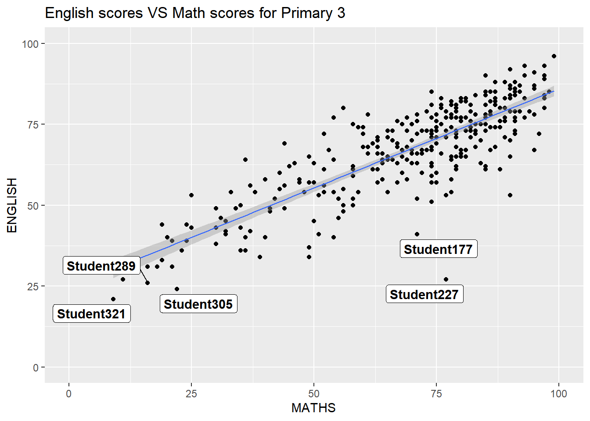
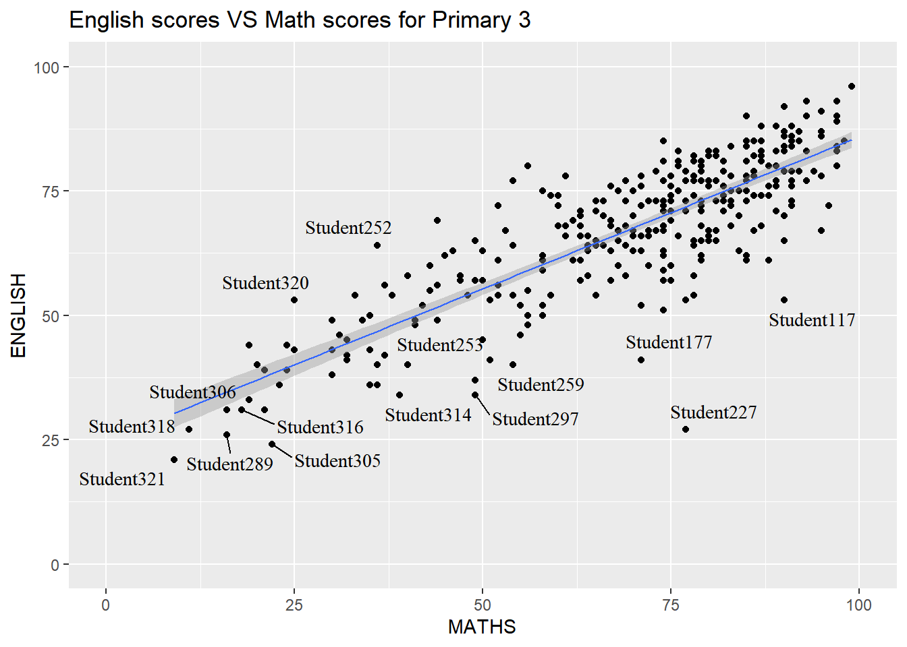
4 Beyond ggplot2 Themes: ggthemes
There are 8 built-in themes in ggplot2. They are: theme_gray()(default), theme_bw(), theme_classic(), theme_dark(), theme_light(), theme_linedraw(), theme_minimal(), and theme_void(), some of them we tried out in Hand-on Exercise 1.11.
VIEW CODE
ggplot(data = exam_data,
aes(x= MATHS)) +
geom_histogram(bins = 20, boundary = 100, fill = "grey10", colour = "grey25") +
ggtitle("Maths scores for Primary 3") +
theme_linedraw()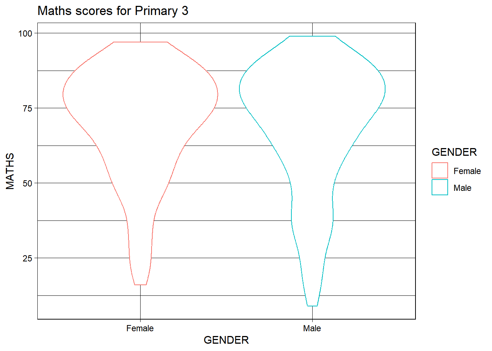
VIEW CODE
ggplot(data = exam_data,
aes(x= MATHS)) +
geom_histogram(bins = 20, boundary = 100, fill = "grey10", colour = "grey25") +
ggtitle("Maths scores for Primary 3") +
theme_dark()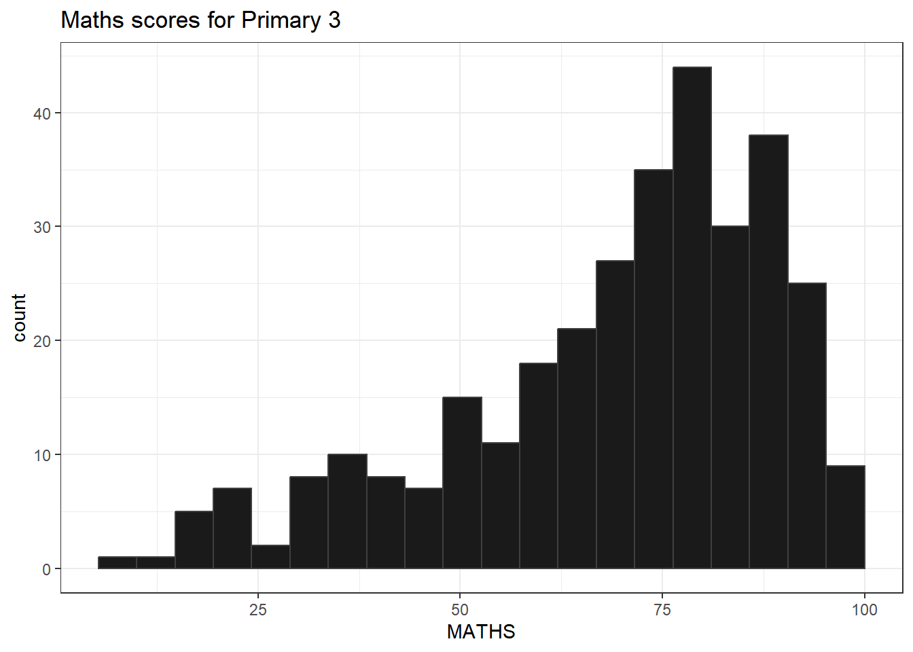
VIEW CODE
ggplot(data = exam_data,
aes(x= MATHS)) +
geom_histogram(bins = 20, boundary = 100, fill = "grey10", colour = "grey25") +
ggtitle("Maths scores for Primary 3") +
theme_bw()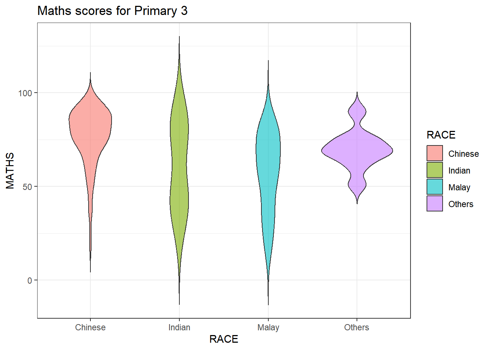
VIEW CODE
ggplot(data = exam_data,
aes(x= MATHS)) +
geom_histogram(bins = 20, boundary = 100, fill = "lightblue", colour = "grey25") +
ggtitle("Maths scores for Primary 3") +
theme_void()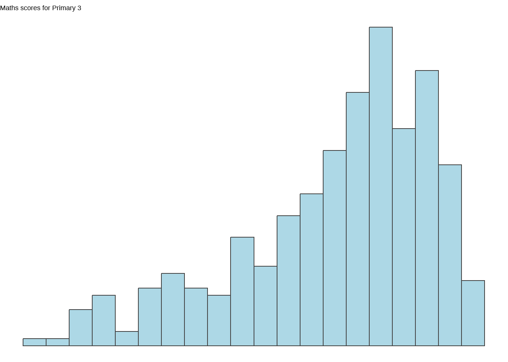
4.1 Working with ggtheme Package
ggthemes mimics famous plotting styles such as The Wall Street Journal theme_wsj(), The Economist theme_economist(), Stata theme_stata(), Excel theme_excel(), Edward Tufte theme_tufte(), Stephen Few theme_few(), and FiveThirtyEighttheme_fivethirtyeight().
Here we try all out again.
VIEW CODE
ggplot(data = exam_data,
aes(x= MATHS)) +
geom_histogram(bins = 20, boundary = 100, fill = "lightblue", colour = "grey25") +
ggtitle("Maths scores for Primary 3") +
theme_stata()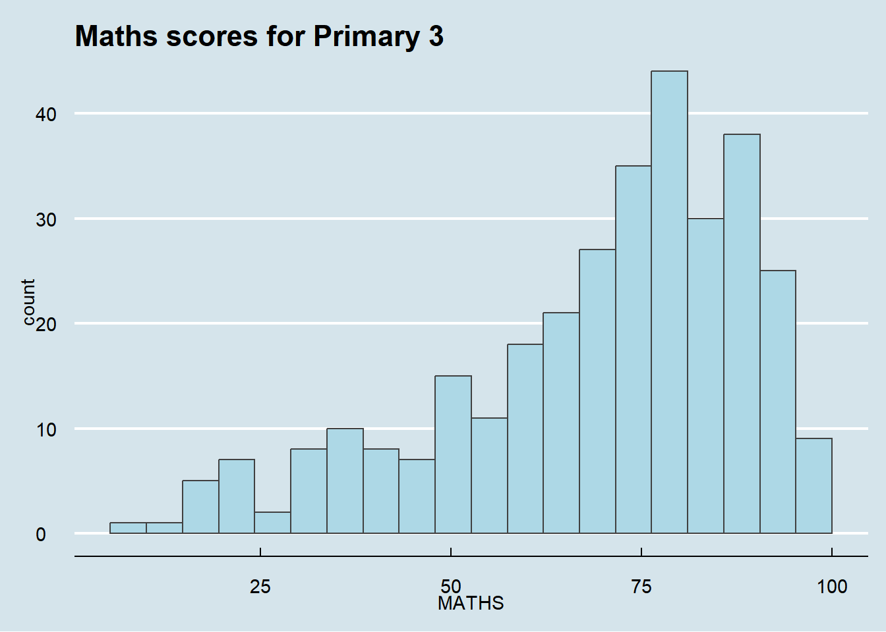
VIEW CODE
ggplot(data = exam_data,
aes(x= MATHS)) +
geom_histogram(bins = 20, boundary = 100, fill = "lightblue", colour = "grey25") +
ggtitle("Maths scores for Primary 3") +
theme_economist()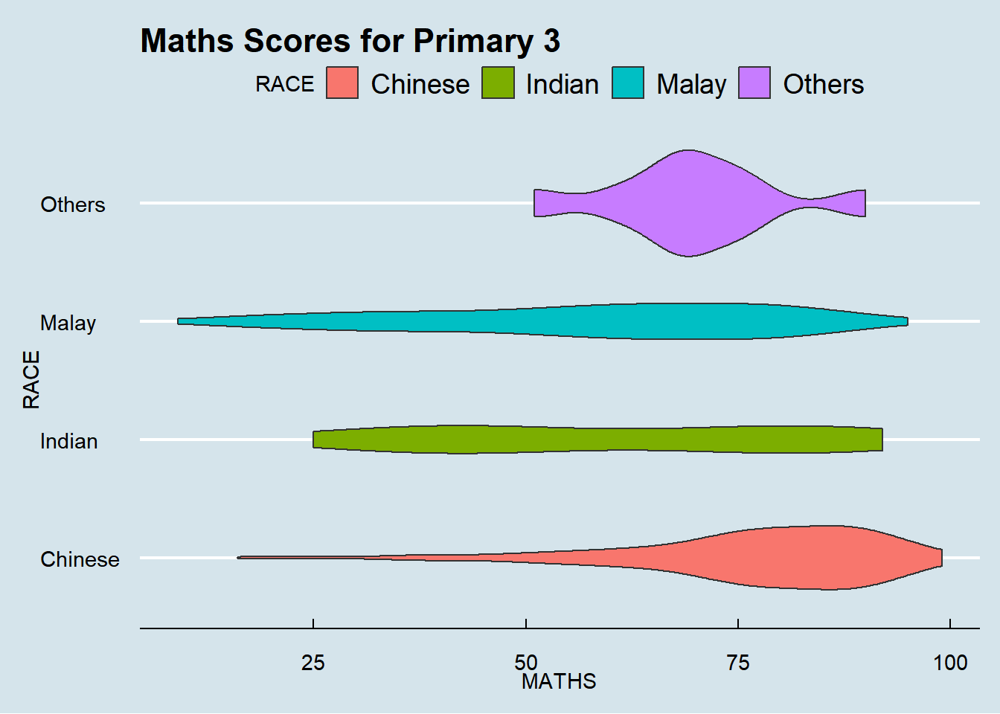
VIEW CODE
ggplot(data = exam_data,
aes(x= MATHS)) +
geom_histogram(bins = 20, boundary = 100, fill = "lightblue", colour = "grey25") +
ggtitle("Maths scores for Primary 3") +
theme_excel()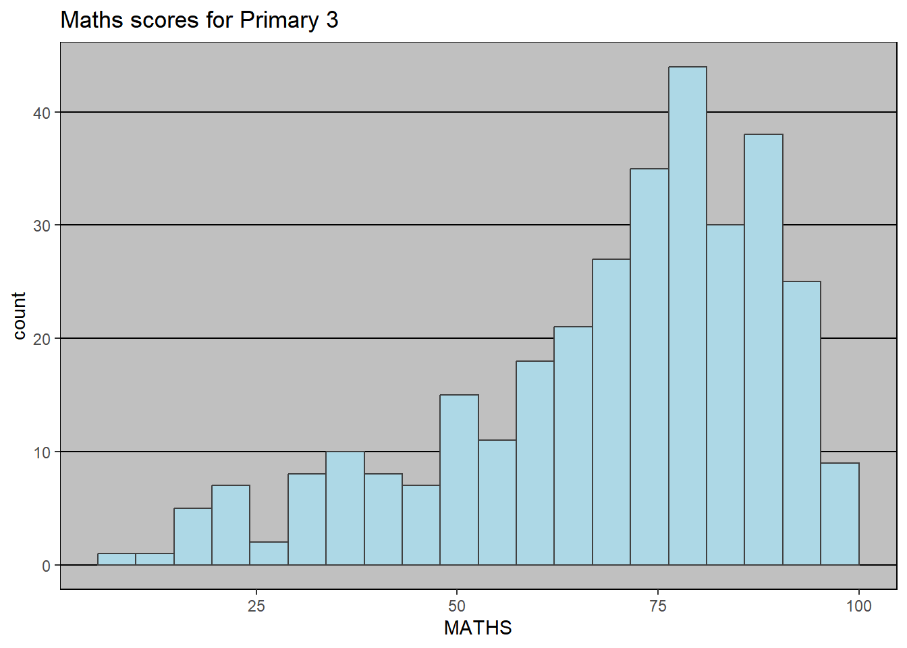
VIEW CODE
ggplot(data = exam_data,
aes(x= MATHS)) +
geom_histogram(bins = 20, boundary = 100, fill = "lightblue", colour = "grey25") +
ggtitle("Maths scores for Primary 3") +
theme_wsj()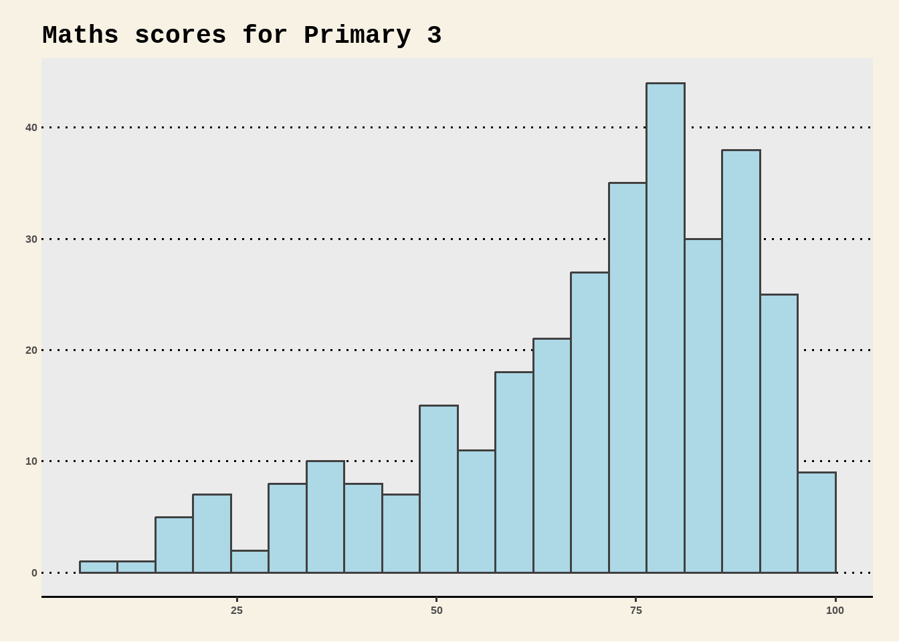
VIEW CODE
ggplot(data = exam_data,
aes(x= MATHS)) +
geom_histogram(bins = 20, boundary = 100, fill = "lightblue", colour = "grey25") +
ggtitle("Maths scores for Primary 3") +
theme_tufte()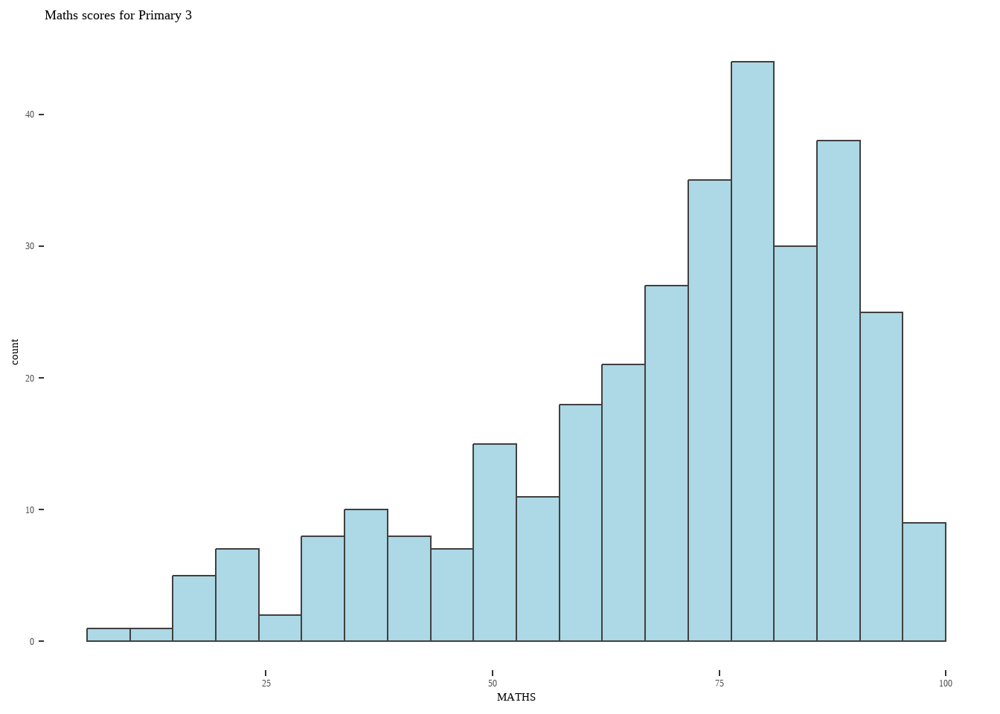
VIEW CODE
ggplot(data = exam_data,
aes(x= MATHS)) +
geom_histogram(bins = 20, boundary = 100, fill = "lightblue", colour = "grey25") +
ggtitle("Maths scores for Primary 3") +
theme_few()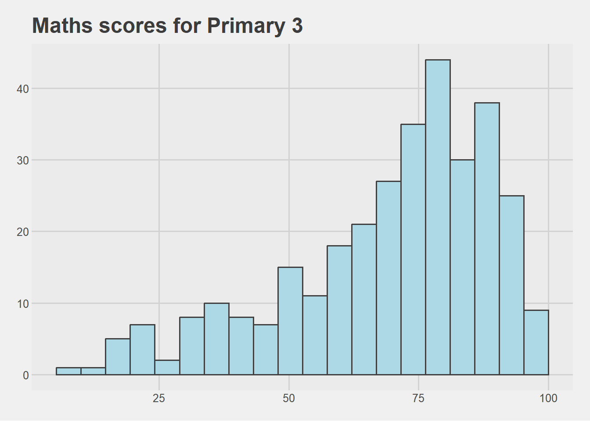
VIEW CODE
ggplot(data = exam_data,
aes(x= MATHS)) +
geom_histogram(bins = 20, boundary = 100, fill = "lightblue", colour = "grey25") +
ggtitle("Maths scores for Primary 3") +
theme_fivethirtyeight()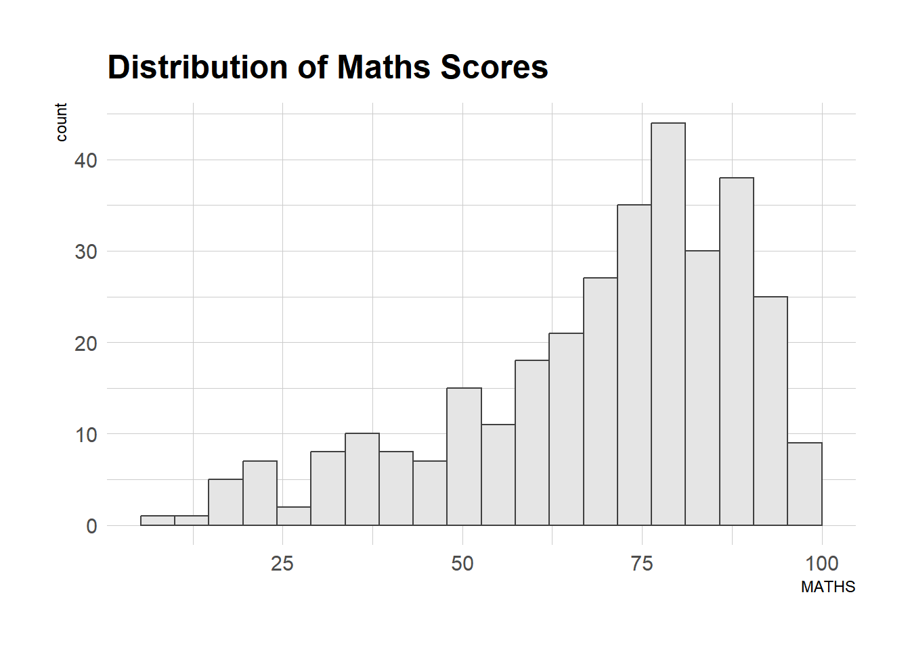
4.2 Working with hrbthemes Package
hrbthemes provides typographic themes and components for ggplot2 e.g. themes(theme_ipsum()), scales (scale_y_percent()), palettes(ft_cols()), fonts(font_ps()), Bit12 colour scales (scale_fill_bit12_continuous()), Flexoki palettes (flexoki_light()), utilities (flush_ticks()).
VIEW CODE
ggplot(data = exam_data, aes(x = MATHS)) +
geom_histogram(bins = 20, boundary = 100,
colour = "grey25", fill = "grey90") +
ggtitle("Distribution of Maths Scores")+
theme_ipsum()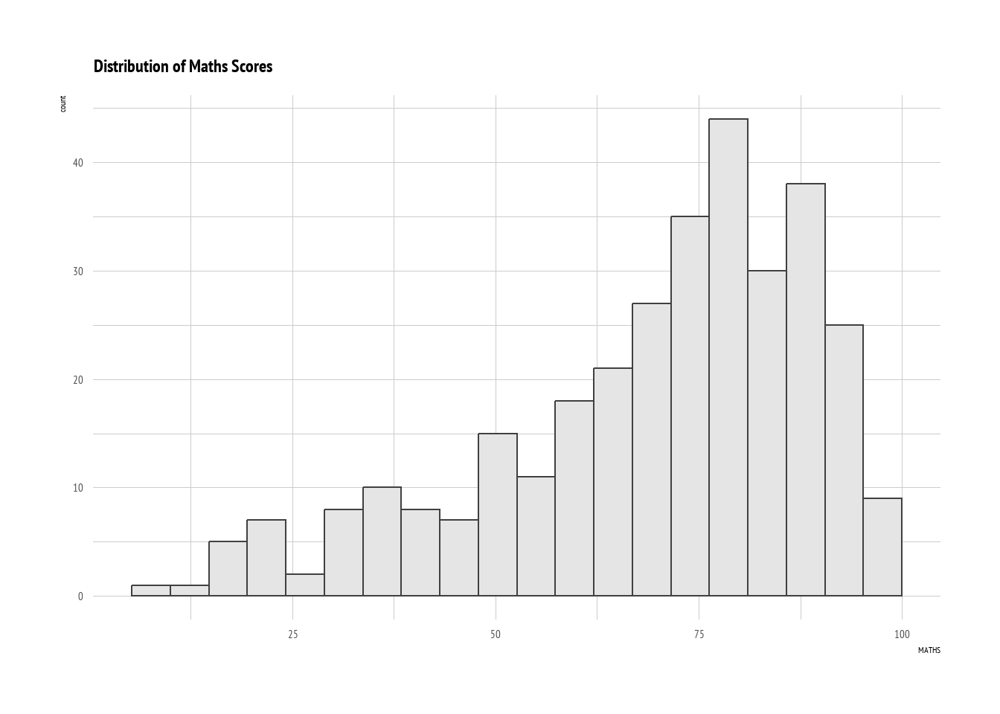
The hrbrthemes package has two main goals: improving typography in plots (such as label placement and fonts) and supporting efficient production workflows.
A production workflow refers to creating visuals for publication, such as blog posts, papers, reports, or presentations. While rough plots are useful during analysis, polished final graphics can help capture attention and improve audience engagement.
VIEW CODE
ggplot(data = exam_data, aes(x = MATHS)) +
geom_histogram(bins = 20, boundary = 100, color="grey25",
fill="grey90") +
labs(title = "Distribution of Maths Scores", caption = "Primary 3 students' year-end scores") +
theme_ipsum(axis_title_size = 18,
base_size = 15,
grid = "Y")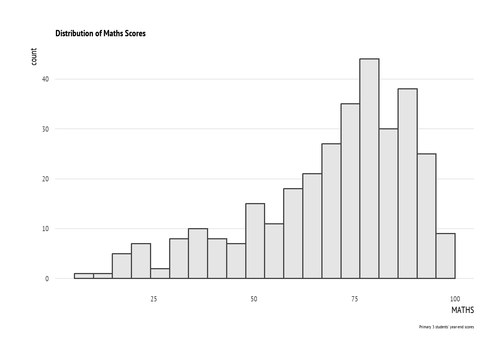
TipTips
axis_title_sizecontrols the axis title font sizebase_sizeSets the default text size for the themegridControls whether grid lines appear. If set to “Y”, it shows grid lines mainly to help track values along the y-axis (making it easier to compare heights/levels).base_familyis used to set the font family. On Windows, the default fonts used bytheme_ipsum()(Arial Narrow) andtheme_ft_rc()(Roboto Condensed) may not be installed, which causes warning messages. Ifbase_familyis not specified, R will fall back to the defaultsansfont. However, we can usefont_import()from extrafont package to import the fonts from system fonts folder to a R font database (the process might take a few minutes) and then load the fonts into the R environment by usingloadfonts(device = "win"). Alternatively, we usefont_add_google()from sysfonts package to download the fonts and load the fonts usingshowtext_auto()from showtext package.
5 Beyond Single Graph
We usually need multiple graphs to tell a compelling visual story. Several ggplot2 extensions provide functions for composing figures made up of multiple plots. In this section, we learn how to create a composite plot by combining multiple graphs. First, let us create three statistical graphics using the code chunk below.
VIEW CODE
p1<- ggplot(data = exam_data,
aes(x=MATHS)) +
geom_histogram(bins = 20, boundary = 100,
colour = "grey25", fill = "grey90") +
coord_cartesian(xlim = c(0,100)) +
ggtitle("Distribution of Maths Scores")
p1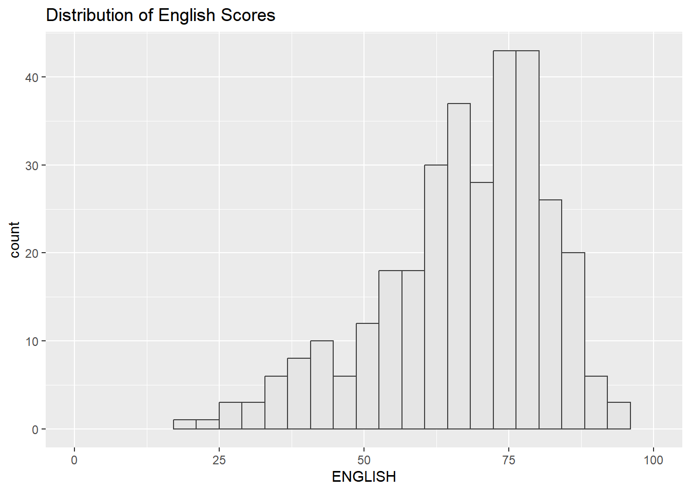
VIEW CODE
p2<- ggplot(data = exam_data,
aes(x=ENGLISH)) +
geom_histogram(bins = 20, boundary = 100,
colour = "grey25", fill = "grey90") +
coord_cartesian(xlim = c(0,100)) +
ggtitle("Distribution of English Scores")
p2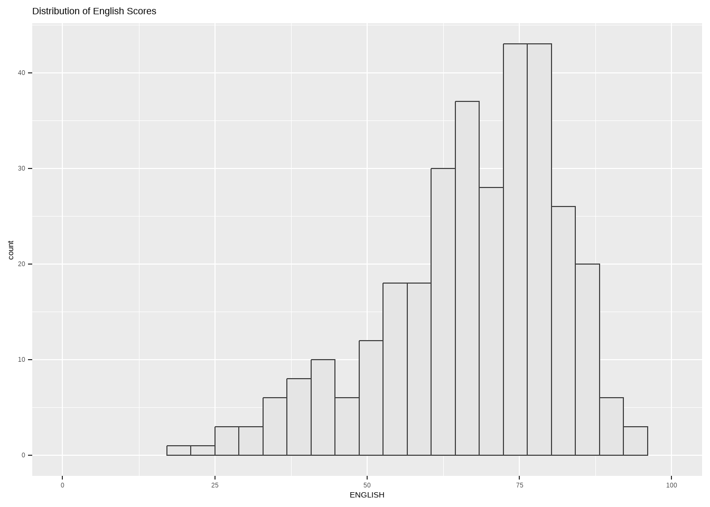
5.1 Creating Composite Graphics: pathwork Methods
Several ggplot2 extension packages support composite figures, such as grid.arrange() from gridExtra package and plot_grid() from cowplot. In this section, we learn patchwork, a ggplot2 extension designed to combine multiple ggplot2 plots into one figure.
Patchwork has a simple syntax:
+arranges plots side by side
()groups plots
/stacks plots vertically
5.2 Combining Two ggplot2 Graphs
The tabset below shows two histograms combined using patchwork by using +. The syntax is simple and intuitive.
VIEW CODE
p1 + p2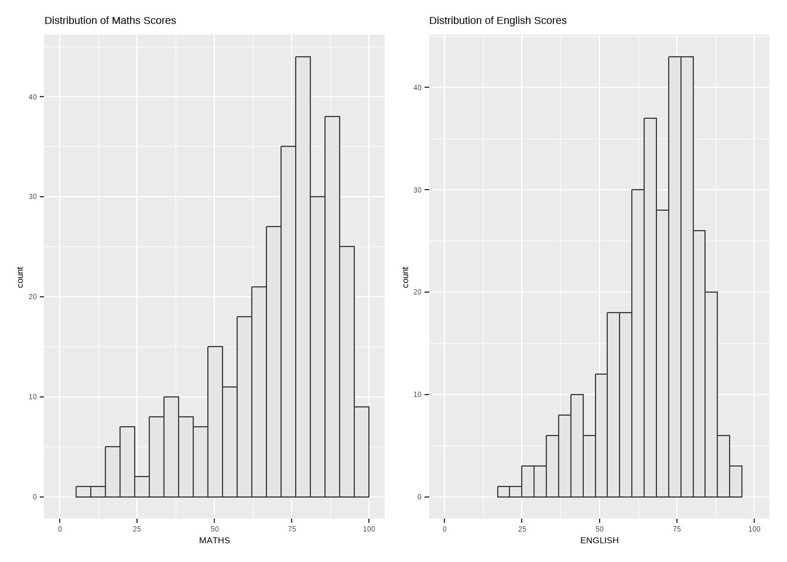
VIEW CODE
p1 / p2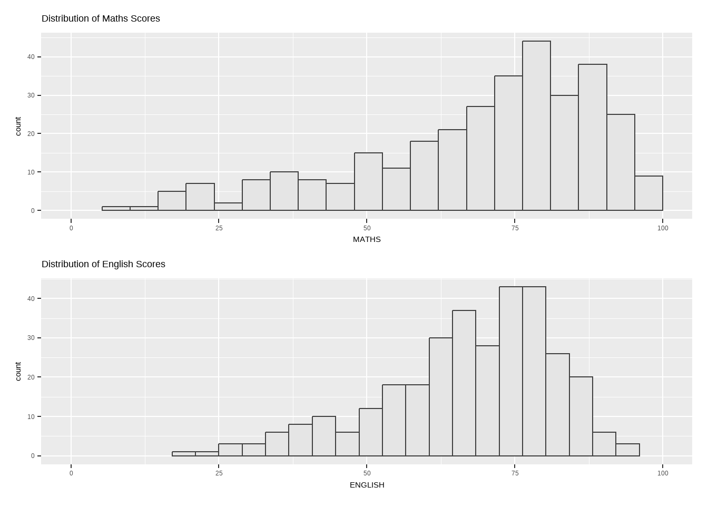
5.3 Combining Three ggplot2 Graphs
More complex composite plots can be created using patchwork operators. For example, the figure below uses / to stack plots, | to place plots side by side, and () to control the layout order.
Further examples can be found on plot Assembly.
VIEW CODE
(p1 / p2) | p3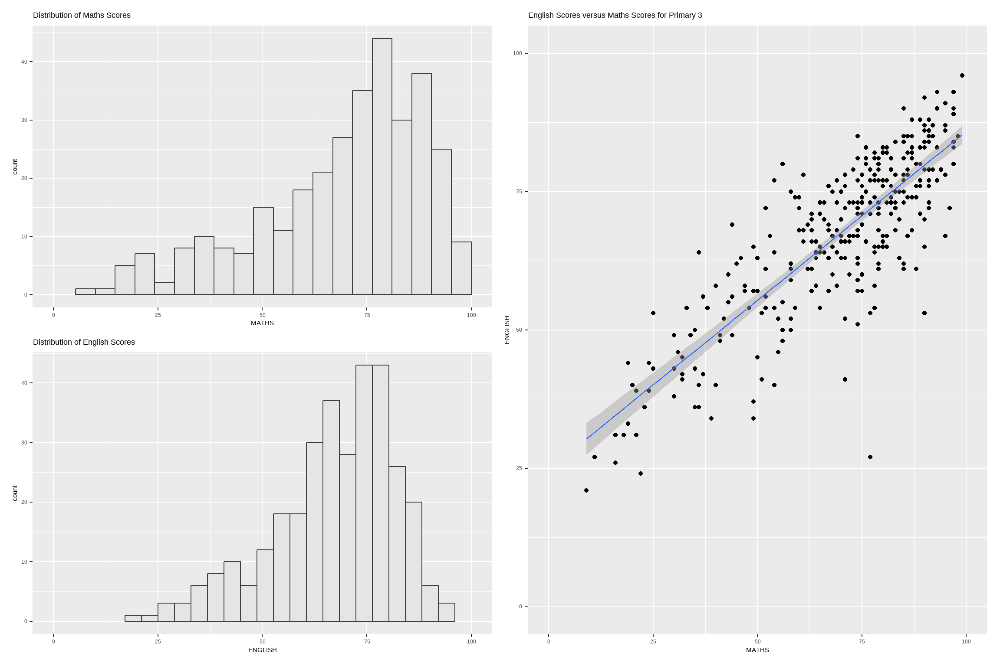
Here, wrap_table() from patchwork is used to create a table. A similar result can also be achieved using gt() from the gt package.
VIEW CODE
p3 + wrap_table(exam_data[1:10, c("MATHS", "ENGLISH")], panel = "full", space = "fixed") 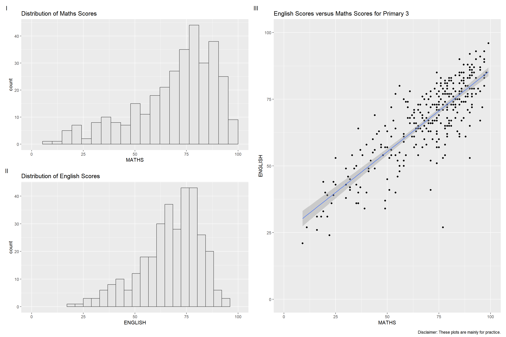
5.4 Creating a Composite Figure with Tag
To help reference subplots in the text, patchwork also supports auto-tagging, as shown in the figure below. Auto-tagging can be enabled by setting tag_levels in plot_annotation() to specify the tag style: '1' for Arabic numerals, 'A' for uppercase letters, 'a' for lowercase letters, 'I' for uppercase Roman numerals, and 'i' for lowercase Roman numerals.
VIEW CODE
((p1 / p2) | p3) +
plot_annotation(
tag_levels = "I",
caption = "Disclaimer: These plots are mainly for practice.")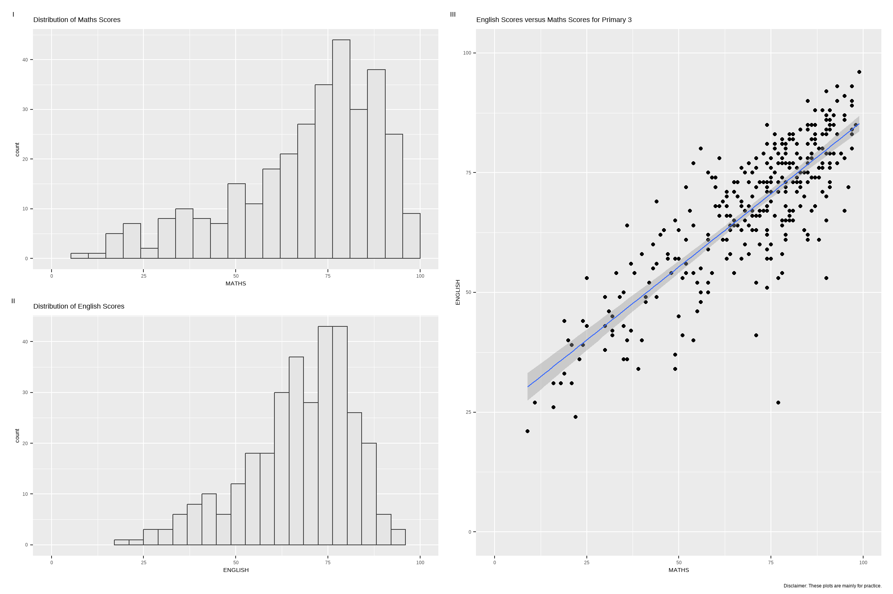
VIEW CODE
((p1 / p2) | p3) + plot_annotation(tag_levels = c('A', '1'), tag_prefix = 'Fig. ',
tag_sep = '.', tag_suffix = ':',caption = "Disclaimer: These plots are mainly for practice.")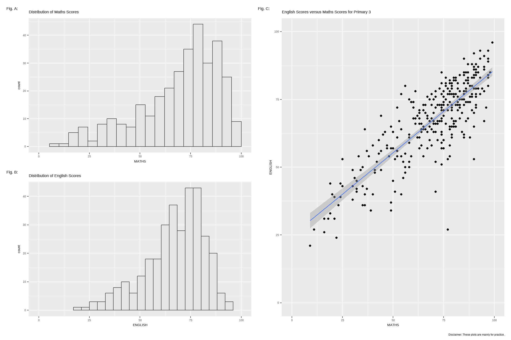
5.5 Creating Figure with Insert
Besides arranging plots using predefined layouts, we could use inset_element() from pacthwork to place one or more plots or graphical elements freely on top of, or within, another plot.
TipKey arguments for inset_element()
p: object to inset (ggplot/grob/gt/etc.)left, bottom, right, top: inset position (numeric or unit)align_to: reference area (“panel” (default), “plot”, “full”)on_top: place inset above or below the main plotclip: clip inset to bounds or notignore_tag: exclude inset from auto-tagging
Tip: keep values between 0 and 1 (npc units) and always ensure left < right, bottom < top.
VIEW CODE
p3 + inset_element(p2,
left = 0.02,
bottom = 0.7,
right = 0.5,
top = 1)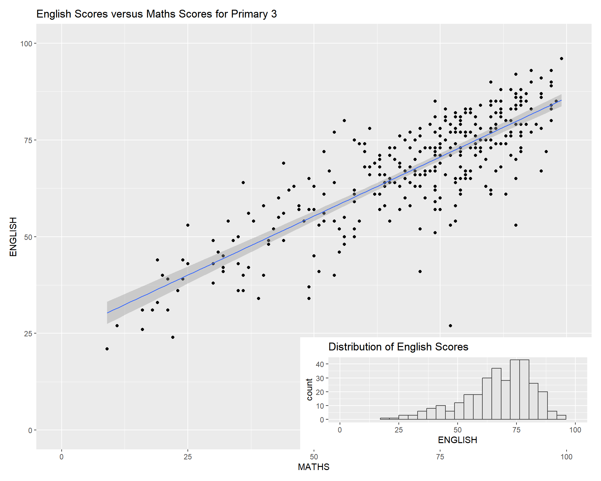
VIEW CODE
p3 + inset_element(p2,
left = 0.5,
bottom = 0.05,
right = 1,
top = 0.3,
align_to = "plot")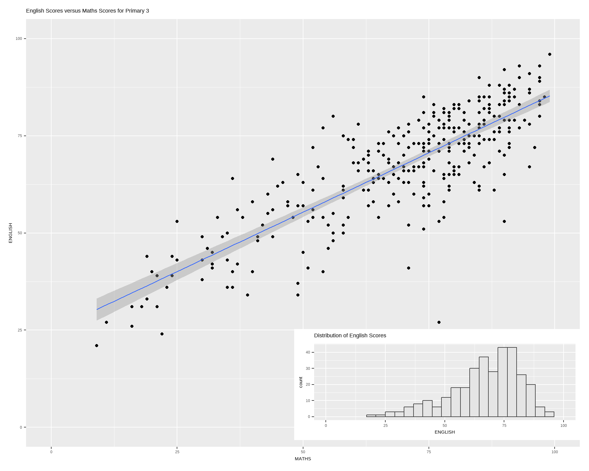
VIEW CODE
p3 + inset_element(p2, 0.5, 0.05, 1, 0.3, align_to= "plot",ignore_tag= TRUE) +
plot_annotation(tag_levels = '1', caption = "Demenstration only")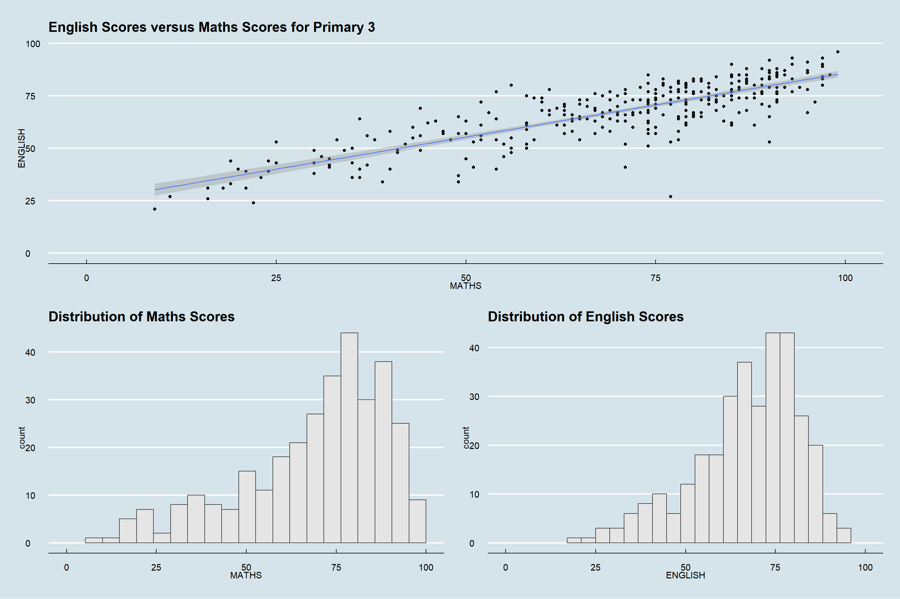
5.6 Creating a Composite Figure by Using patchwork and ggtheme
Figure below is created by combining patchwork and theme_economist() of ggthemes package using operator &, applying to all plots in the patchwork layout. If you use + , the theme is applied only to the last patchwork object, not every subplot.
VIEW CODE
patchwork <- p3 / (p1 + p2)
patchwork & theme_economist()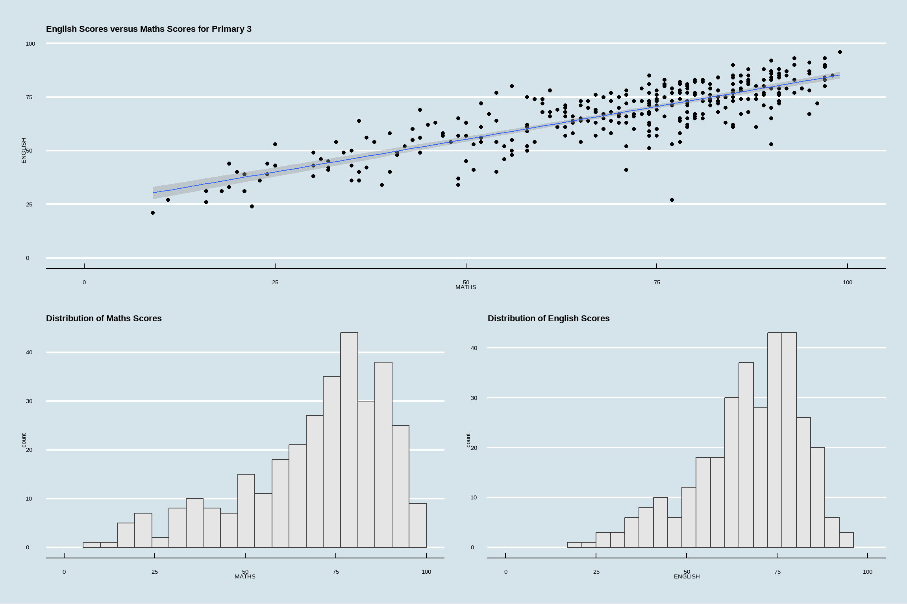
VIEW CODE
patchwork <- (p1 / p2) | p3
patchwork & theme_linedraw() 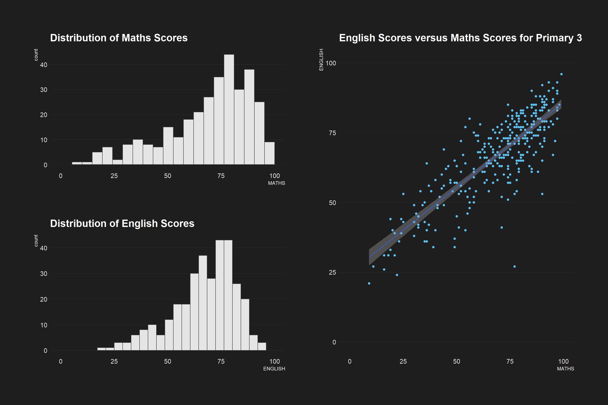
VIEW CODE
patchwork <- (p1 / p2) | p3
patchwork & theme_modern_rc(grid="Y")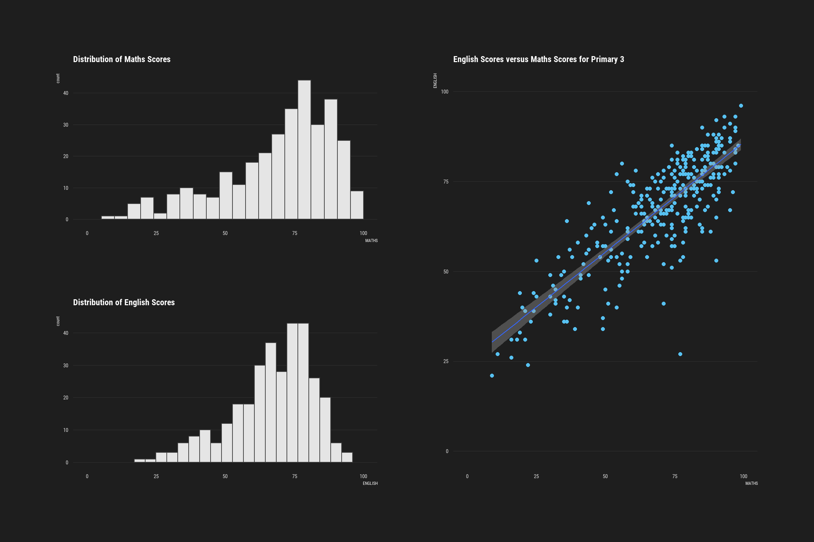
6 Reference
Kam, Tin Seong (2026). 2 Beyond ggplot2 Fundamentals. R for Visual Analytics.
Patchwork R package goes nerd viral